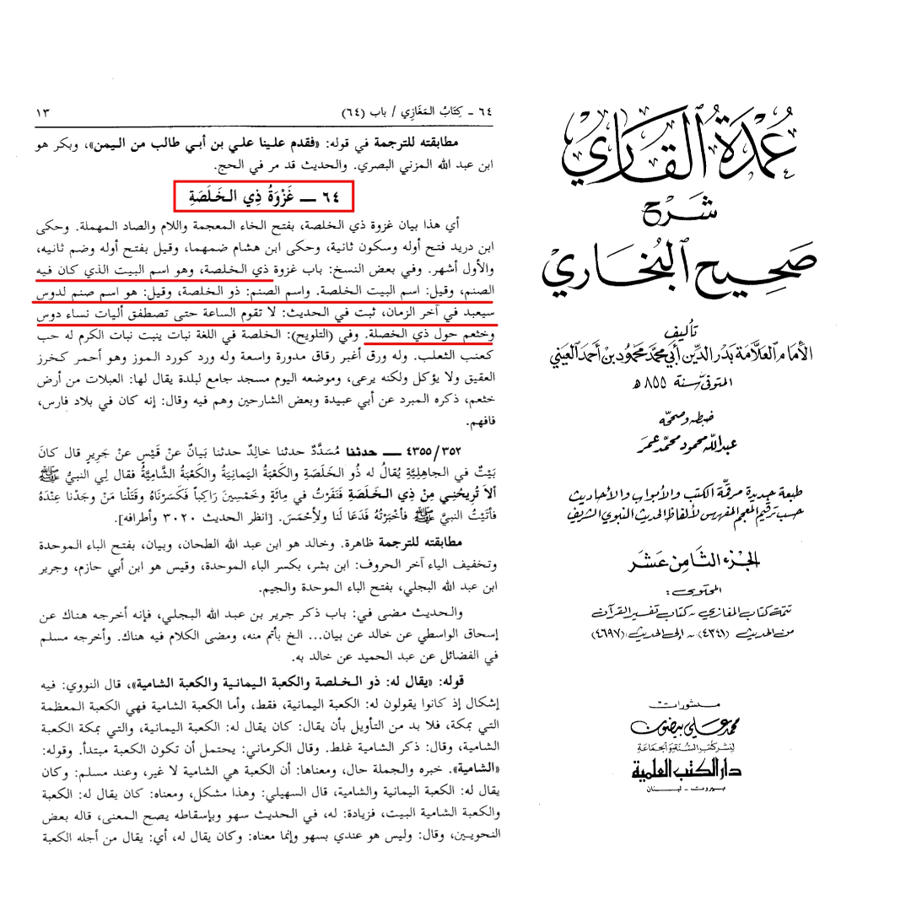
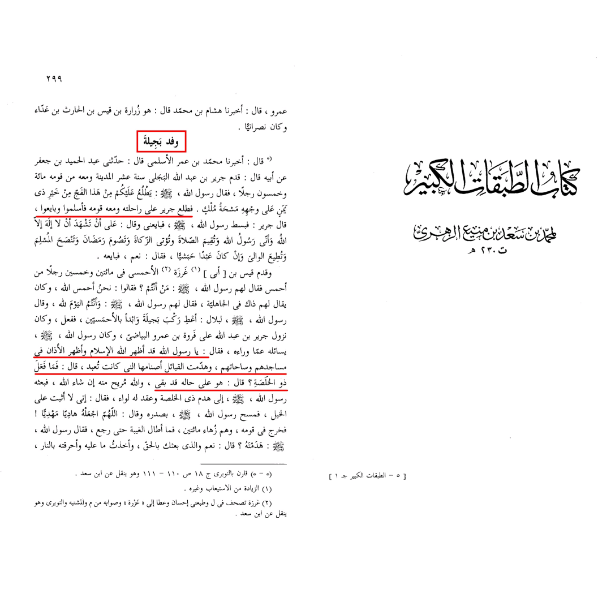
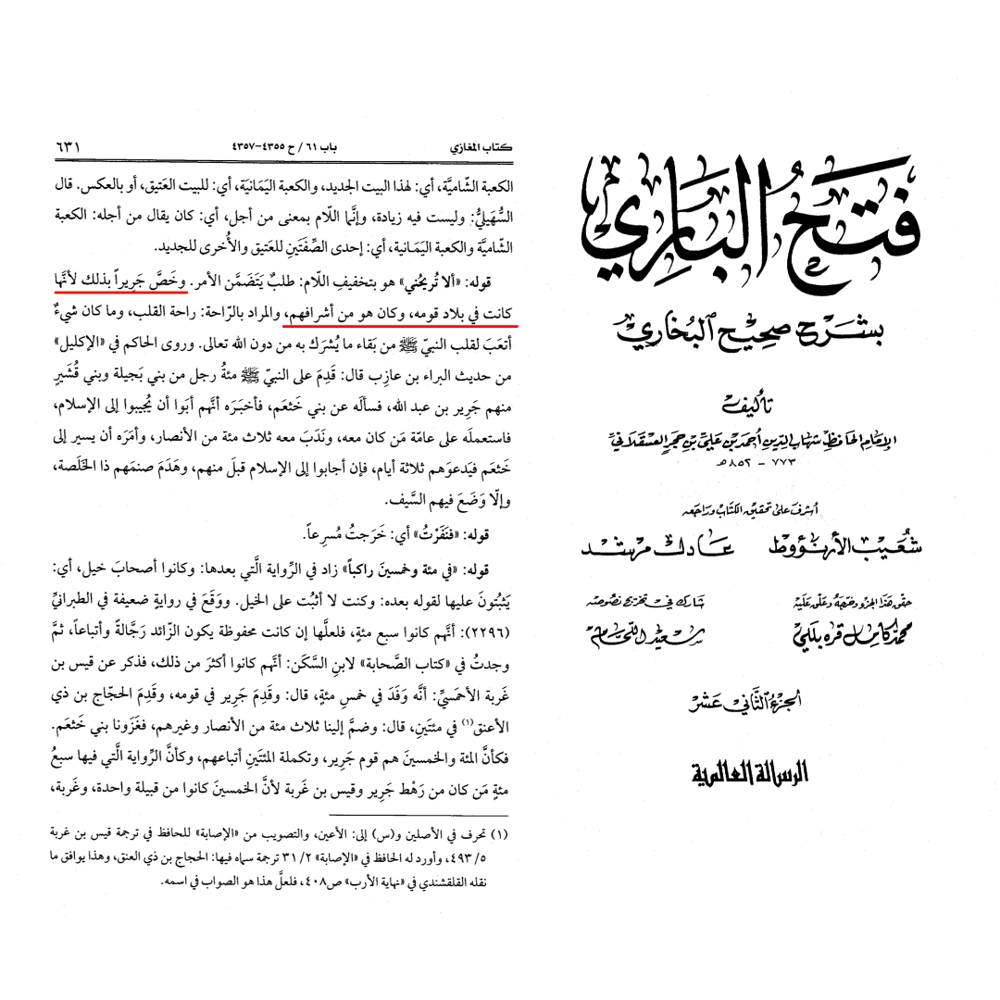
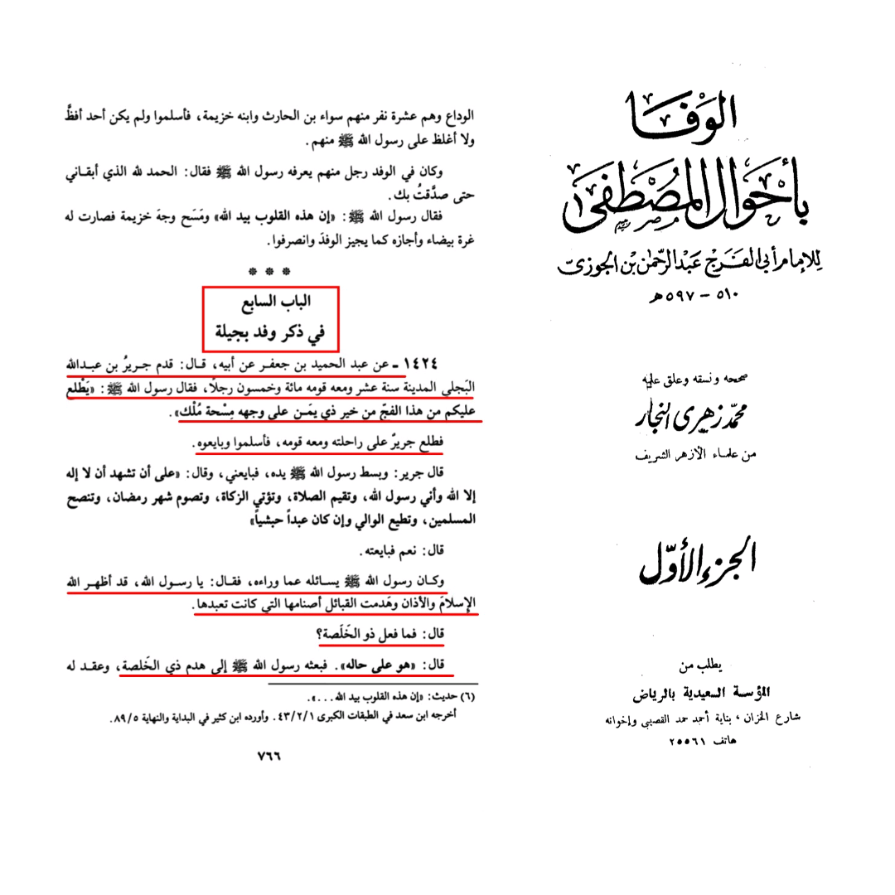
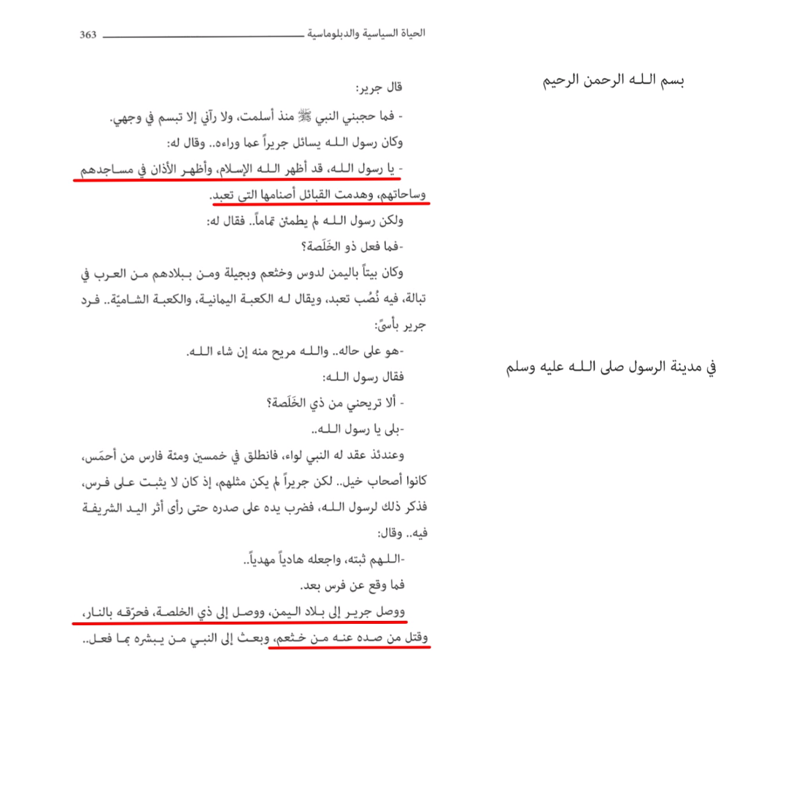

First of all, let's start with the objection regarding this hadith:
It's mentioned in many hadiths including Sahih Al Bukhari and Sahih Muslim that the prophet (صلى الله عليه وسلم) ordered Jurayr (رضي الله عنه) to destroy a place called Dhul Khulasa which is a tribe that was worshiping idols.
So the objection made is that how could the prophet order the killing of people simply because they had a different religion?
Let's start by tackling this argument step by step:
First of all, the prophet never ordered Jurayr to kill anyone, he simply ordered him to destroy a place of idol worship that still stands from the days of Jahiliya, since the idol itself was called "ذو الخلصة", so the prophet specifically ordered Jurayr to destroy that place and not to kill the inhabitants there. And keep in mind that this was after the Arab tribes converted to Islam and they themselves were destroying the idols that they were worshiping.

Now, when Jurayr came to the prophet to convert to Islam, the prophet asked him about the other Arab tribes, so Jurayr answered him:
"They converted to Islam and destroyed their idols". So the prophet asked Jurayr: "What happened to Dhul Khulasa [meaning the idol]?" Jurayr Answered:
"It still stands [meaning it wasn't destroyed with the other idols"
So the prophet sent Jurayr to destroy that idol, and he chose Jurayr specifically for this task since this idol was in his lands which he came from. So just like all other Arab tribes destroyed the idols they worshiped after they converted to Islam, Jurayr also destroyed the idol that he and his people worshiped after they converted to Islam. And the same thing happened at the conquest of Mecca, when Quraish destroyed their idols after converting to Islam.

And Imam Ibin Hajar Al Asqilani in Fath Al Bari, confirms that the reason why the prophet sent Jurayr to do this task is because Jurayr and his tribe ware worshiping that idol.

Yes here's another report by Imam Ibin Al Jawzi with the same wordings

So, the prophet never ordered the killing of any person, nor did Jurayr say that he was going to kill anyone. They were simply talking about the idol, and Jurayr's task was simply to go and destroy the idol just like every other tribe were destroying theirs
Now, why did Jurayr say that he killed some people there? According to Sahih Al Bukhari, Jurayr said that he killed some people while he was destroying the idol. Simply to answer that, on his mission, he was attacked by some people from his tribe (Bani Katham) who wanted to kill him because he converted to Islam and they wanted to defend their idol worship, so he fought against them. And that's the only explanation for that since in Islam you can't fight anyone who isn't fighting you. And at the conquest of Mecca the prophet allowed the non believers who didn't want to convert to Islam to leave peacefully and didn't kill them because they didn't fight.

When a tribe converts to Islam, they have the choice to destroy what they were worshiping before, since it's their land. And that is something that even Arabs in the Jahiliya believed, just like when someone looses a war, everything he leaves behind goes to the winner in the war. Same thing if Islam enters a place where there's idol worship the vast majority of Muslims there don't want to see idol worshiping in their land they have the choice of removing it and the people fighting against them are fighting against the what the majority wants so they either live in that land as the ruling authorities demand or they can leave